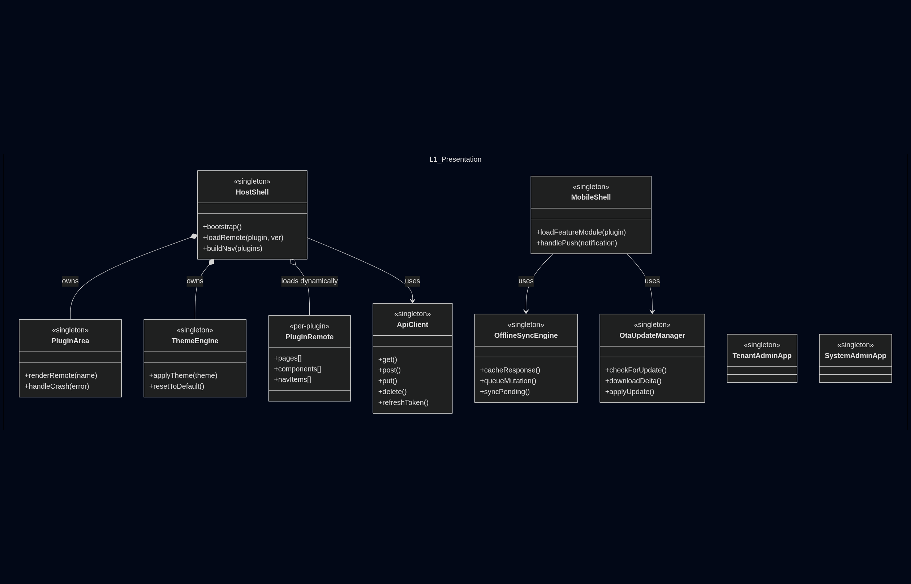
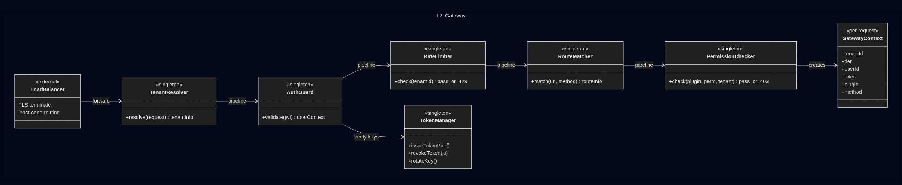
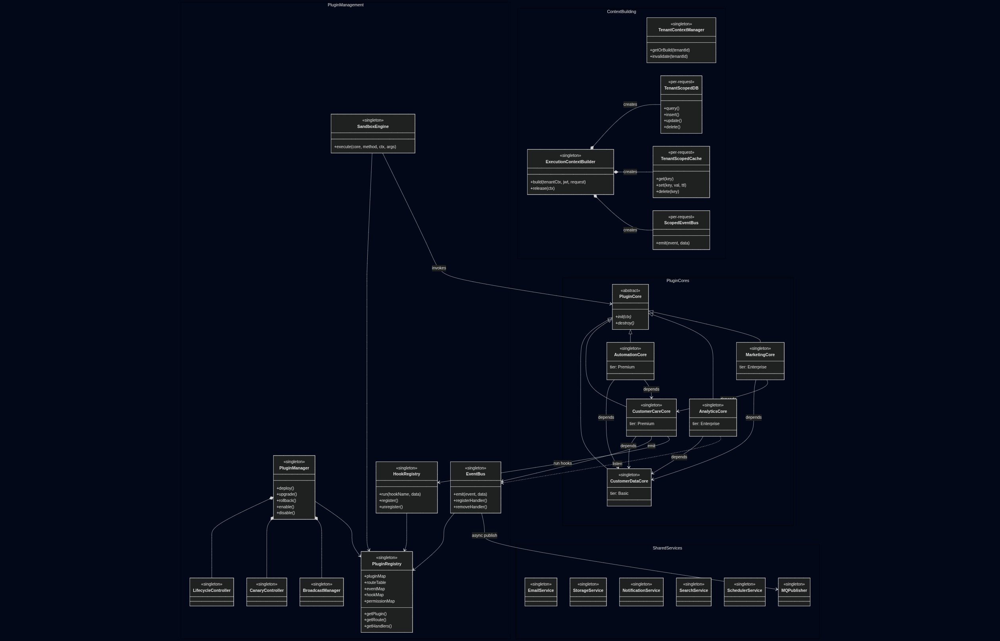
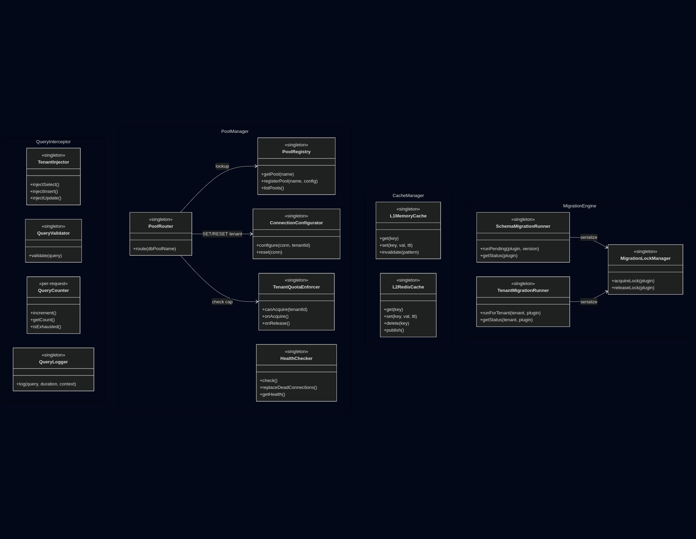
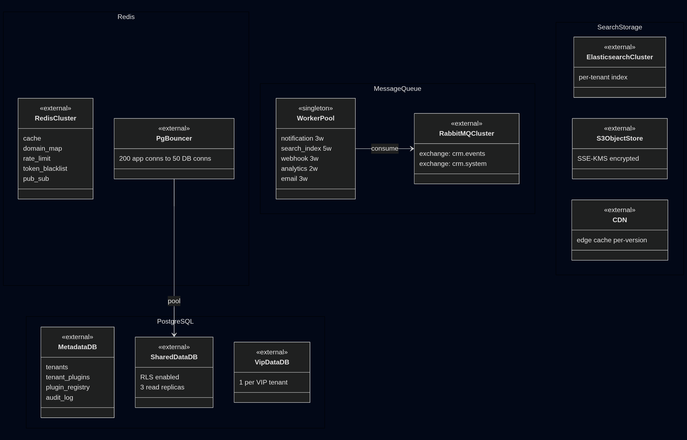
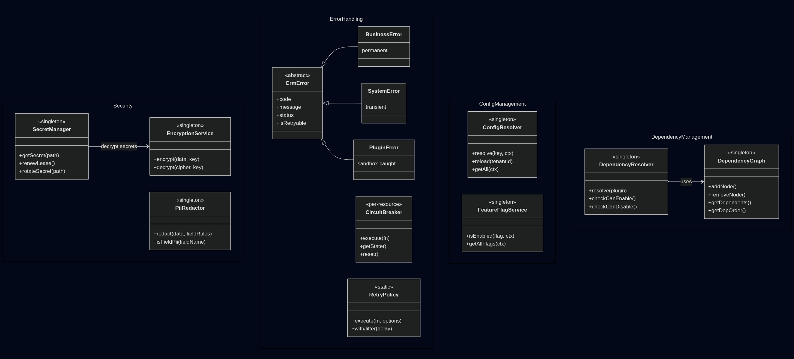
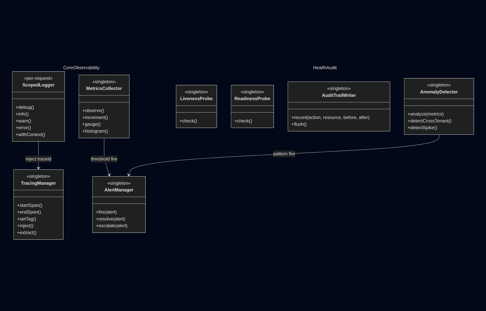

Chi tiết các thực thể (class/service) trong từng Layer của hệ thống CRM Multi-tenant SaaS.
┌──────────────────────────┬────────┬──────────────────────────────────┐ │ Layer │ Count │ Nhóm chính │ ├──────────────────────────┼────────┼──────────────────────────────────┤ │ L1 Presentation │ 10 │ Shell, Remotes, Admin, Mobile │ │ L2 API Gateway │ 8 │ 5 Middleware + 3 support │ │ L3 Business Logic │ 20 │ Mgmt, Cores, Context, Services │ │ L4 Data Access │ 14 │ Query, Pool, Cache, Migration │ │ L5 Infrastructure │ 10 │ PostgreSQL, Redis, MQ, ES, S3 │ │ L6 Cross-cutting │ 10 │ Security, Error, Config, Deps │ │ L7 Observability │ 8 │ Log, Trace, Metric, Alert, Audit│ ├──────────────────────────┼────────┼──────────────────────────────────┤ │ TOTAL │ ~80 │ │ └──────────────────────────┴────────┴──────────────────────────────────┘ STEREOTYPE LEGEND: «singleton» Tạo 1 lần khi bootstrap. Dùng chung toàn process. «per-request» Tạo mới mỗi HTTP request. GC sau response. «per-tenant» 1 instance per tenant. Cached trong LRU. «abstract» Base class / interface. Không instantiate trực tiếp. «external» Hệ thống ngoài (DB, Redis, MQ). Không viết code. «static» Utility class, chỉ có static methods. «enum» Tập hợp constants cố định. «config» Configuration object, loaded from DB/file. QUAN HỆ CHÍNH GIỮA CÁC LAYER: L1 ───HTTP──→ L2 ───output──→ L3 ───uses──→ L4 ───connects──→ L5 │ │ └─────── L6 (xuyên tầng) ───────┘ └─────── L7 (quan sát) ─────────┘

WEB APP GROUP (5) ┌──────────────────────────────────────────────────────────────────────┐ │ HostShell «singleton» │ │ React SPA entry point. Quản lý app frame (sidebar, topbar), │ │ auth flow (JWT memory + refresh cookie), React Router, │ │ theme engine (CSS vars per-tenant), plugin remote loading. │ │ methods: bootstrap(), loadRemote(plugin, ver), buildNav(plugins) │ ├──────────────────────────────────────────────────────────────────────┤ │ PluginRemote «per-plugin» │ │ Module Federation remote entry (remoteEntry.js). Chứa pages + │ │ components UI cho 1 plugin. Load động bởi HostShell khi navigate. │ │ exposes: pages[], components[], navItems[] │ ├──────────────────────────────────────────────────────────────────────┤ │ PluginArea «singleton» │ │ React component slot trong HostShell. Render active PluginRemote │ │ based on URL. Wraps mỗi remote trong ErrorBoundary riêng. │ │ methods: renderRemote(name), handleCrash(error) │ ├──────────────────────────────────────────────────────────────────────┤ │ ThemeEngine «singleton» │ │ Load tenant theme (logo, colors, fonts) từ /me/context API. │ │ Apply CSS custom properties lên document root. │ │ methods: applyTheme(theme), resetToDefault() │ ├──────────────────────────────────────────────────────────────────────┤ │ ApiClient «singleton» │ │ Shared HTTP client (Axios/Fetch wrapper). Auto-attach JWT Bearer, │ │ X-Tenant-ID header. Handle 401 → auto refresh. Retry transient. │ │ methods: get(), post(), put(), delete(), refreshToken() │ └──────────────────────────────────────────────────────────────────────┘ MOBILE APP GROUP (3) ┌──────────────────────────────────────────────────────────────────────┐ │ MobileShell «singleton» │ │ React Native / Flutter app shell. Navigation, push handler, │ │ biometric auth, tenant branding, dynamic feature module loader. │ │ methods: loadFeatureModule(plugin), handlePush(notification) │ ├──────────────────────────────────────────────────────────────────────┤ │ OfflineSyncEngine «singleton» │ │ SQLite local cache + pending mutation queue. Khi online → batch │ │ sync API. Conflict resolution (last-write-wins / server-wins). │ │ methods: cacheResponse(), queueMutation(), syncPending() │ ├──────────────────────────────────────────────────────────────────────┤ │ OtaUpdateManager «singleton» │ │ CodePush / Shorebird wrapper. Check + download + apply OTA delta. │ │ methods: checkForUpdate(), downloadDelta(), applyUpdate() │ └──────────────────────────────────────────────────────────────────────┘ ADMIN GROUP (2) ┌──────────────────────────────────────────────────────────────────────┐ │ TenantAdminApp «singleton» │ │ SPA cho tenant admin. Plugin enable/disable, user RBAC, │ │ plugin config editor (schema-validated), billing/usage dashboard. │ │ domain: admin.{subdomain}.crm.com │ ├──────────────────────────────────────────────────────────────────────┤ │ SystemAdminApp «singleton» │ │ SPA cho platform ops (internal only, VPN). Tenant CRUD, plugin │ │ deploy/canary/rollback, monitoring, migration status. │ │ domain: system.crm.internal (IP whitelist + MFA) │ └──────────────────────────────────────────────────────────────────────┘

MIDDLEWARE PIPELINE (5) — chạy tuần tự mỗi request ┌──────────────────────────────────────────────────────────────────────┐ │ LoadBalancer «external» │ │ Nginx / K8s Ingress. TLS terminate, least-conn routing, VIP → │ │ dedicated pool. Health check /health/live 10s. HPA trigger. │ │ output: plain HTTP request → app instance │ ├──────────────────────────────────────────────────────────────────────┤ │ TenantResolver «singleton» │ │ Extract subdomain / custom domain / X-Tenant-ID header. │ │ Redis cache (domain-map:{key}, TTL 5min) → fallback Metadata DB. │ │ output: { tenantId, tier, status } | reject 404/403/410 │ ├──────────────────────────────────────────────────────────────────────┤ │ AuthGuard «singleton» │ │ JWT decode → verify RS256 → check expiry → tenant claim match → │ │ Redis blacklist check → extract userId, roles, permissions. │ │ output: { userId, roles, permissions } | reject 401/403 │ ├──────────────────────────────────────────────────────────────────────┤ │ RateLimiter «singleton» │ │ Sliding window counter (Redis Sorted Set). ZADD + ZCARD per │ │ tenant. Tier limits: Basic 100, Premium 500, Ent 2000, VIP ∞. │ │ output: pass + X-RateLimit headers | reject 429 + Retry-After │ ├──────────────────────────────────────────────────────────────────────┤ │ RouteMatcher «singleton» │ │ Trie-based URL lookup → routeTable (from PluginRegistry). │ │ Map URL+method → plugin name + handler method + required perm. │ │ output: { plugin, method, requiredPermission } | reject 404 │ └──────────────────────────────────────────────────────────────────────┘ SUPPORT (3) ┌──────────────────────────────────────────────────────────────────────┐ │ PermissionChecker «singleton» │ │ 3 kiểm tra: plugin enabled cho tenant? User role có perm? Tenant │ │ tier bao gồm feature? In-memory lookup, ~0.1ms. │ │ output: pass | reject 403 │ ├──────────────────────────────────────────────────────────────────────┤ │ GatewayContext «per-request» │ │ DTO tổng hợp output các middleware: tenantId, tier, userId, roles, │ │ plugin, method, permission. Chuyển cho L3 Context Building. │ ├──────────────────────────────────────────────────────────────────────┤ │ TokenManager «singleton» │ │ JWT signing key cache (rotate định kỳ), refresh token rotation, │ │ blacklist write (on logout/revoke). │ │ methods: issueTokenPair(), revokeToken(jti), rotateKey() │ └──────────────────────────────────────────────────────────────────────┘

PLUGIN MANAGEMENT (5) ┌──────────────────────────────────────────────────────────────────────┐ │ PluginManager «singleton» │ │ Quản lý vòng đời plugin. Load configs, check dependencies, inject │ │ code, handle hot-reload/rollback. │ │ methods: deploy(ver), enable(tenant), disable(tenant), rollback() │ ├──────────────────────────────────────────────────────────────────────┤ │ PluginRegistry «singleton» │ │ In-memory map [pluginName → PluginCore instance]. Route table map │ │ [url → handler]. Event listener map. │ │ properties: pluginMap, routeTable, eventMap │ ├──────────────────────────────────────────────────────────────────────┤ │ SandboxEngine «singleton» │ │ Wrapper an toàn để execute plugin code. Catch unhandled errors, │ │ timeout protection (30s), resource usage tracking. │ │ methods: execute(core, method, ctx, args) │ ├──────────────────────────────────────────────────────────────────────┤ │ LifecycleController «singleton» │ │ Điều phối quy trình init/destroy của plugin. Đảm bảo init theo │ │ dependency order (D.O.G). │ └──────────────────────────────────────────────────────────────────────┘ PLUGIN CORES (5) — Các core logic modules ┌──────────────────────────────────────────────────────────────────────┐ │ PluginCore «abstract» │ │ Base class cho mọi plugin backend. Bắt buộc implement: init(ctx), │ │ destroy(). Optional: onTenantEnable(), onTenantDisable(). │ ├──────────────────────────────────────────────────────────────────────┤ │ CustomerDataCore «singleton» │ │ Quản lý Contacts, Leads, Companies. Custom fields engine. │ ├──────────────────────────────────────────────────────────────────────┤ │ CustomerCareCore «singleton» │ │ Tickets, SLAs, Email templates, Omnichannel routing. │ ├──────────────────────────────────────────────────────────────────────┤ │ AutomationCore «singleton» │ │ Workflow storage, trigger matching, action execution engine. │ ├──────────────────────────────────────────────────────────────────────┤ │ AnalyticsCore «singleton» │ │ ETL jobs, Report generation, Dashboard config storage. │ └──────────────────────────────────────────────────────────────────────┘ CONTEXT BUILDING (5) — «per-request» ┌──────────────────────────────────────────────────────────────────────┐ │ TenantContextManager «singleton» │ │ Quản lý tenant config cache (timezone, currency, features). │ │ methods: getOrBuild(tenantId), invalidate(tenantId) │ ├──────────────────────────────────────────────────────────────────────┤ │ ExecutionContextBuilder «singleton» │ │ Factory tạo TenantScopedDB, TenantScopedCache cho mỗi request. │ │ Inject tenant_id vào mọi câu query SQL/Redis. │ │ methods: build(tenantCtx, jwt, request), release(ctx) │ ├──────────────────────────────────────────────────────────────────────┤ │ TenantScopedDB «per-request» │ │ Wrapper quanh Knex/TypeORM transaction. Auto-filter `where │ │ tenant_id = ?`. Block cross-tenant queries. │ ├──────────────────────────────────────────────────────────────────────┤ │ TenantScopedCache «per-request» │ │ Wrapper quanh Redis client. Auto-prefix `tenant:{id}:`. │ └──────────────────────────────────────────────────────────────────────┘ MESSAGING & EVENTS (5) ┌──────────────────────────────────────────────────────────────────────┐ │ EventBus «singleton» │ │ Internal pub/sub (Nodejs EventEmitter). Sync/Async handlers. │ │ methods: emit(event, data), on(event, handler) │ ├──────────────────────────────────────────────────────────────────────┤ │ MQPublisher «singleton» │ │ Publish message ra RabbitMQ (cho async jobs, webhooks). │ │ methods: publish(queue, msg), schedule(queue, msg, delay) │ ├──────────────────────────────────────────────────────────────────────┤ │ SystemServices │ │ 6 services nhưng cùng pattern → group thành 1 block. │ │ Tất cả: singleton, tenant-aware, async-preferred. │ └──────────────────────────────────────────────────────────────────────┘

QUERY INTERCEPTOR GROUP (4) — chặn + transform mọi query ┌──────────────────────────────────────────────────────────────────────┐ │ TenantInjector «singleton» │ │ Parse SQL AST, tự động thêm `WHERE tenant_id = '...'` vào SELECT, │ │ UPDATE, DELETE. Thêm check vào INSERT. Chặn DROP TABLE. │ │ methods: injectSelect(), injectInsert(), validateQuery() │ ├──────────────────────────────────────────────────────────────────────┤ │ QueryValidator «singleton» │ │ Whitelist tables/columns allow. Block dangerous SQL functions. │ │ Ensures no cross-schema access. │ ├──────────────────────────────────────────────────────────────────────┤ │ QueryCounter «per-request» │ │ Đếm số lượng query trong 1 request. Warning nếu > 50, Error > 100. │ │ methods: increment(), isExhausted() │ ├──────────────────────────────────────────────────────────────────────┤ │ QueryLogger «singleton» │ │ Log slow queries (>200ms) + explain plan. Sample 1% normal queries.│ └──────────────────────────────────────────────────────────────────────┘ POOL MANAGER GROUP (5) — quản lý connection database ┌──────────────────────────────────────────────────────────────────────┐ │ PoolRegistry «singleton» │ │ Map [db_shard → Knex Pool]. Quản lý physical connections tới các │ │ DB shards (Shared, VIP1, VIP2). Start/Stop pools. │ ├──────────────────────────────────────────────────────────────────────┤ │ PoolRouter «singleton» │ │ Quyết định tenant A dùng pool nào. Logic: TenantConfig.db_shard │ │ methods: route(tenantId) → poolName │ ├──────────────────────────────────────────────────────────────────────┤ │ ConnectionConfigurator «singleton» │ │ `SET LOCAL search_path` cho Postgres session nếu dùng schema-per- │ │ tenant. Reset session state khi return pool. │ ├──────────────────────────────────────────────────────────────────────┤ │ TenantQuotaEnforcer «singleton» │ │ Giới hạn max connections per tenant. Tránh 1 tenant chiếm hết pool.│ │ methods: canAcquire(tenantId) │ └──────────────────────────────────────────────────────────────────────┘ CACHE MANAGER GROUP (2) ┌──────────────────────────────────────────────────────────────────────┐ │ L1MemoryCache «singleton» │ │ LRU Cache (In-process). Cache nhỏ, TTL ngắn (5s). Configs, rules. │ ├──────────────────────────────────────────────────────────────────────┤ │ L2RedisCache «singleton» │ │ Redis Client wrapper. Consistent Hashing cho Redis Cluster. │ │ Serialization (JSON/Protobuf). Compression (Snappy) cho large obj. │ └──────────────────────────────────────────────────────────────────────┘ MIGRATION ENGINE GROUP (3) ┌──────────────────────────────────────────────────────────────────────┐ │ SchemaMigrationRunner «singleton» │ │ Chạy DDL (Create Table, Add col) cho từng plugin version. │ │ Idempotent. Track version trong `schema_migrations` table. │ ├──────────────────────────────────────────────────────────────────────┤ │ TenantMigrationRunner «singleton» │ │ Data backfill/transform khi tenant upgrade plugin version. │ │ Run background job, low priority. │ ├──────────────────────────────────────────────────────────────────────┤ │ MigrationLockManager «singleton» │ │ PostgreSQL advisory locks. Prevent race condition khi 2 tenants │ │ enable cùng plugin đồng thời. Serialize migration execution. │ │ methods: acquireLock(plugin), releaseLock(plugin) │ └──────────────────────────────────────────────────────────────────────┘

POSTGRESQL GROUP (3) — «external» ┌──────────────────────────────────────────────────────────────────────┐ │ MetadataDB │ │ Chứa: tenants, tenant_plugins, plugin_registry, schema_migrations, │ │ tenant_plugin_migrations, audit_log (partitioned), system_config. │ ├──────────────────────────────────────────────────────────────────────┤ │ SharedDataDB (Sharded) │ │ Chứa business data cho 95% tenants (Standard/Pro). Partition by │ │ tenant_hash. Nhiều physical nodes (Shard 1..N). │ ├──────────────────────────────────────────────────────────────────────┤ │ VipDataDB (Isolated) │ │ Database riêng cho từng VIP tenant (Enterprise). Physical isolation.│ │ Backup/Restore policy riêng biệt. │ └──────────────────────────────────────────────────────────────────────┘ REDIS & MQ GROUP (4) — «external» ┌──────────────────────────────────────────────────────────────────────┐ │ RedisCluster │ │ Dữ liệu tạm: Cache session, Rate limit counters, Realtime pub/sub, │ │ Job queues (BullMQ). Mode: Cluster (nhân rộng write/read). │ ├──────────────────────────────────────────────────────────────────────┤ │ PgBouncer │ │ Connection pooling layer trước Postgres. mode=transaction. │ │ Giảm overhead SSL handshake và fork process của Postgres. │ ├──────────────────────────────────────────────────────────────────────┤ │ RabbitMQCluster │ │ Message Broker bền vững. Exchanges: direct (webhook), topic (event),│ │ fanout (broadcast). Dead Letter Exchanges (failed jobs). │ ├──────────────────────────────────────────────────────────────────────┤ │ WorkerPool «singleton» │ │ Nodejs worker processes consumption queue. Auto-scale K8s HPA. │ └──────────────────────────────────────────────────────────────────────┘ SEARCH & STORAGE GROUP (3) — «external» ┌──────────────────────────────────────────────────────────────────────┐ │ ElasticsearchCluster │ │ Full-text search engine. Index riêng/chung tùy tier. │ │ Log aggregation storage (cho L7). │ ├──────────────────────────────────────────────────────────────────────┤ │ S3ObjectStore (MinIO/AWS S3) │ │ Lưu uploads, documents, media, daily backups. │ │ Encryption at rest. Lifecycle policies (move to Glacier). │ ├──────────────────────────────────────────────────────────────────────┤ │ CDN «external» │ │ Serve Host Shell static assets + Plugin remoteEntry.js. Edge │ │ cache per-version (immutable). Fallback: origin server. │ └──────────────────────────────────────────────────────────────────────┘

SECURITY GROUP (3) ┌──────────────────────────────────────────────────────────────────────┐ │ EncryptionService «singleton» │ │ AES-256-GCM encryption cho sensitive fields (PII). Quản lý keys │ │ từ KMS/Vault. Key rotation support. │ │ methods: encrypt(val, context), decrypt(val, context) │ ├──────────────────────────────────────────────────────────────────────┤ │ PiiRedactor «singleton» │ │ Masking log data (email, phone, credit card) trước khi write log. │ │ methods: redact(obj), sanitize(string) │ ├──────────────────────────────────────────────────────────────────────┤ │ SecretManager «singleton» │ │ Fetch secrets từ Vault/AWS Secrets Manager lúc startup. │ │ methods: getSecret(name), onSecretRotate(cb) │ └──────────────────────────────────────────────────────────────────────┘ ERROR & RELIABILITY GROUP (4) ┌──────────────────────────────────────────────────────────────────────┐ │ CrmError «abstract» │ │ Base Unified Error class. Props: code, httpStatus, userMessage, │ │ internalMessage, meta. Auto stack trace capture. │ ├──────────────────────────────────────────────────────────────────────┤ │ CircuitBreaker «singleton» │ │ Bảo vệ calls tới external systems (Email, PDF Gen). States: Closed │ │ → Open (fails) → Half-Open (probe). │ │ methods: fire(command), fallback() │ ├──────────────────────────────────────────────────────────────────────┤ │ RetryPolicy «singleton» │ │ Exponential backoff logic cho HTTP calls / DB queries. │ │ Configs: maxRetries, baseDelay, maxDelay, jitter. │ └──────────────────────────────────────────────────────────────────────┘ CONFIG & DI GROUP (3) ┌──────────────────────────────────────────────────────────────────────┐ │ ConfigResolver «singleton» │ │ Merge configs từ 3 nguồn: Environment Variables < System DB < │ │ Tenant DB override. Hot-reload config changes. │ │ methods: get(key), getBool(key), getInt(key) │ ├──────────────────────────────────────────────────────────────────────┤ │ FeatureFlagService «singleton» │ │ Kiểm tra feature on/off cho tenant/user (LaunchDarkly/Internal). │ │ methods: isEnabled(flag, context) │ ├──────────────────────────────────────────────────────────────────────┤ │ DependencyResolver «singleton» │ │ Topological sort plugin dependencies. Đảm bảo Core load trước Extension.│ │ Updated on plugin deploy/undeploy. Shared with PluginManager. │ │ methods: addNode(), removeNode(), getDependents(), getDepOrder() │ └──────────────────────────────────────────────────────────────────────┘

CORE OBSERVABILITY (4) ┌──────────────────────────────────────────────────────────────────────┐ │ ScopedLogger «per-request» │ │ Auto-bind requestId, tenantId, userId, plugin vào mọi log line. │ │ JSON structured output. Levels: debug, info, warn, error. │ ├──────────────────────────────────────────────────────────────────────┤ │ TracingManager «singleton» │ │ OpenTelemetry Wrapper. Manually create spans cho logic blocks quan │ │ trọng. Propagate trace context qua RabbitMQ/HTTP calls. │ │ methods: startSpan(name), endSpan(), inject(), extract() │ ├──────────────────────────────────────────────────────────────────────┤ │ MetricsCollector «singleton» │ │ Prometheus client. Custom metrics: http_request_duration, │ │ db_pool_usage, active_tenants, plugin_crashes_total. │ │ methods: inc(metric), observe(metric, val) │ ├──────────────────────────────────────────────────────────────────────┤ │ AlertManager «singleton» │ │ Rule engine check ngưỡng metrics → gửi Slack/PagerDuty. │ │ methods: checkThresholds(), triggerAlert(level, msg) │ └──────────────────────────────────────────────────────────────────────┘ HEALTH & AUDIT (4) ┌──────────────────────────────────────────────────────────────────────┐ │ LivenessProbe «singleton» Service còn sống không? │ │ ReadinessProbe «singleton» Sẵn sàng nhận traffic? (DB ok, Cache ok) │ │ methods: checkHealth(), getStatusDetails() │ ├──────────────────────────────────────────────────────────────────────┤ │ AuditTrailWriter «singleton» │ │ Ghi lại mọi hành động thay đổi data quan trọng (WHO did WHAT, │ │ WHEN, WHERE, diff BEFORE/AFTER). Write to MetadataDB (Partitioned).│ │ methods: logAudit(ctx, action, target, changes) │ ├──────────────────────────────────────────────────────────────────────┤ │ AnomalyDetector «singleton» │ │ Background job phân tích metric trends. Phát hiện bất thường: │ │ spike in error rate, abnormal traffic shape. Feed → AlertManager. │ │ methods: analyze(metrics), detectCrossTenant(), detectSpike() │ └──────────────────────────────────────────────────────────────────────┘
CROSS-LAYER — Request Flow (L2 → L3 → L4 → L5) TenantResolver ──▶ RedisCluster domain-map cache lookup TenantResolver ──▶ MetadataDB fallback tenant query AuthGuard ──▶ RedisCluster blacklist check, session get RateLimiter ──▶ RedisCluster sliding window counter GatewayContext ──▶ TenantContextManager pass tenant info GatewayContext ──▶ ExecutionContextBuilder pass user info ExecutionContextBuilder ◆──▶ TenantScopedDB create instance ExecutionContextBuilder ◆──▶ TenantScopedCache create instance ExecutionContextBuilder ◆──▶ ScopedLogger bind context TenantScopedDB ──▶ TenantInjector inject filter before query TenantScopedDB ──▶ PoolRouter ask for connection PoolRouter ──▶ PoolRegistry get physical pool PoolRegistry ──▶ SharedDataDB actual query (most tenants) PLUGIN ARCHITECTURE (L3 internally) PluginManager ◆──▶ LifecycleController manages PluginManager ◇──▶ PluginRegistry updates map PluginManager ──▶ DependencyResolver checks order SandboxEngine ──▶ PluginCore executes code safely PluginCore ··▷ CustomerDataCore extensions depend on core INFRASTRUCTURE & OPS (L6, L7) ScopedLogger ──▶ PiiRedactor mask data before write TracingManager ──▶ RabbitMQCluster propagate trace id MetricsCollector ──▶ AlertManager feed data EncryptionService ──▶ SecretManager get keys FeatureFlagService ──▶ RedisCluster cache flags DATA ACCESS HELPERS SchemaMigrationRunner ──▶ MigrationLockManager serialize PoolRouter ──▶ TenantQuotaEnforcer check limits CLASS HIERARCHY Inheritance ──▷ │ BusinessError extends CrmError │ Interface ··▷ │ All plugin cores implement PluginCore iface │ └───────────────────────────────────────────────────────────────────┘